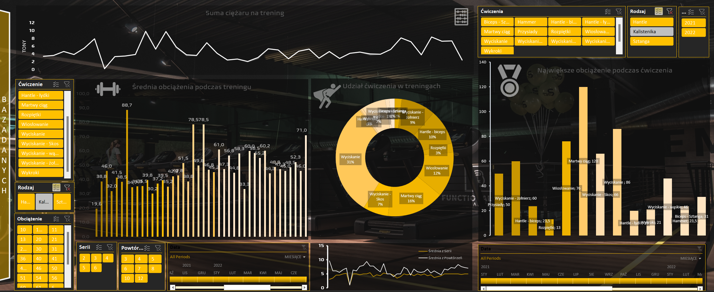
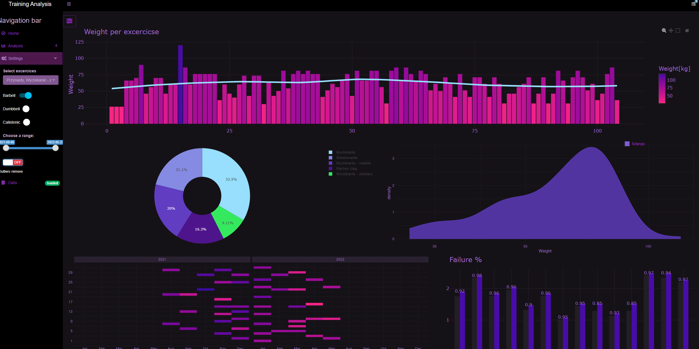
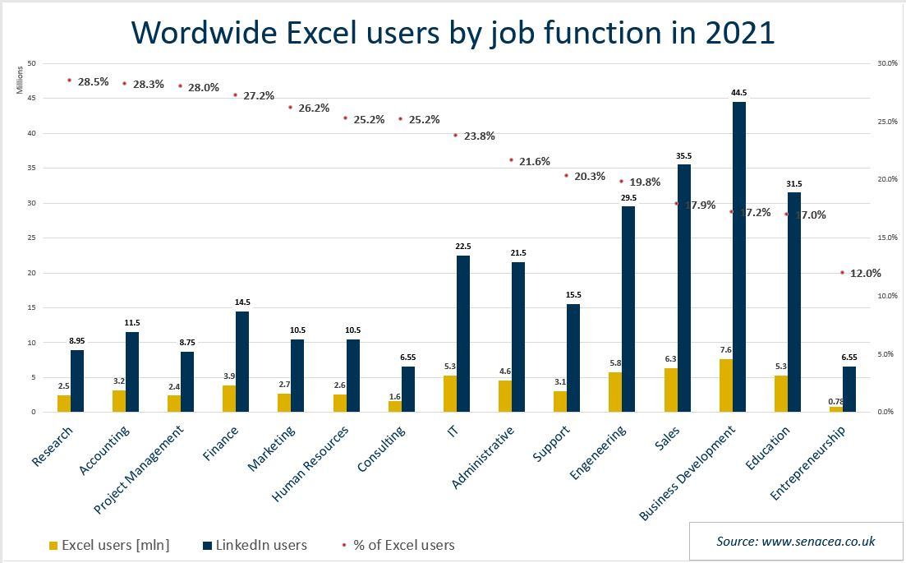

A Personal Evolution in Data Analytics
Why?
The following article is an introspective journey through my experiences in data analysis and designing analytical systems. Looking back at the dynamics of my development, everything I write here will become outdated by the next day at the latest. However, I am convinced that documenting the path I have taken will give my work a new quality and allow me to highlight the skills I have acquired, of which I may not be fully aware.
Currently (July 2023), I base my reflections on two applications, the genesis of which I will explain in the next article. They serve as the cornerstone of my chosen data science path. In previous projects, I encountered challenges and difficulties that provided valuable lessons. Analyzing these experiences, I realized that the process of designing and implementing analytical systems requires a balance between theory and practice. And as with any craft, balance is achieved only after spending hundreds of hours coding for a single theoretical lecture. Therefore, in order to give it more pragmatism and make the writing of these far from non-programmatic verses more attractive, a side effect of this work will also be the design of application, which will be an improved version of its predecessors.
The main aspects I will take into consideration are:
Problem understanding
Data analysis
UX/UI
How it all started

The first data analytics project I undertook had a very pragmatic background. Specifically, my growing passion for sports, particularly strength sports at that time, led to the need for recording training results. Since I belong to the species of naked apes living in the era of digitization, it was not appropriate to use a sheet of paper for this purpose.

The most obvious solution in this situation was Excel, and that’s what I turned to. Initially, it was just a simple table where I manually entered the data. Over time, analyzing tabular data proved to be less and less effective and inefficient when planning the training schedule. So, new charts were added to the worksheet one after another. Over time, the charts evolved into increasingly complementary and comprehensive sets, organized with filters and timelines. I would now describe it as a dashboard. The method of entering data also changed - during my training sessions, I used a touch screen, which motivated me to develop a more effective method of entering new training records - I started experimenting with VBA. After months of iterative ad hoc improvements of my excel application, I obtained a satisfying tool for that time.
Source: Author’s own work, 2024
During my third semester of studies, I heard that a “true analyst can only react to the word ‘Excel’ with a snort or pity.” This is how I began learning programming in R. I learned the fundamentals of this language in a statistics course and liked it so much that I bought a course on DataCamp and immediately started learning to create analytical applications. As my first project, which was supposed to encompass everything I had learned in the course, I chose to reimplement the excels’ training tool . After several weeks of reading documentation and rewriting functions line by line, I succeeded in accomplishing my goal.
Is it really Excel?
A bit of facts
Excel is a popular spreadsheet program developed by Microsoft. It is widely used in various fields, including business, finance, social sciences, and engineering, to process, analyze, and present data.

Source: https://images.senacea.co.uk/post/excel-users-how-many (access 15.07.2022)
One of the key elements of Excel is its user interface, which is relatively intuitive and easy to use. It is undoubtedly the driving force behind Excel’s phenomenal success and the era of spreadsheets. However, it is also Excel’s Achilles’ heel, as it prevents it from being taken seriously. When dealing with more complex data structures and mathematical models, one must either learn another analytical environment or engage in masochistic work and have prophetic nightmares of a corrupted workbook.
A little creativity and…
It’s time to take a closer look at the unearthed desktop after years and try not to collapse under the influx of crimes that assault the eyes one after another.
At first glance, the desktop appears relatively neat and promises a rich information pill that we will be able to read from visualizations time and time again. Nothing could be further from the truth!
Objective and analytical problem
Design is not just what it looks like and feels like. Design is how it works.
In this case, the objective takes on an amorphous form resembling “The table is boring, let’s change that.” - quite close to previous thought. At this stage, it can already be concluded that the end product will take the form of an equally amorphous entity that fulfills none of the needs (equally amorphous).
Without a clearly defined objective, no subsequent puzzle piece will fit. Formulating questions to be answered will be done in a chaotic, unstructured manner. And although using this method of creative exploration, once every dozen… dozens… depending on luck and intuition, we ask a question that actually allows us to go in the right direction (i.e., one that satisfactorily fulfills our undefined needs), we can by no means talk about the effectiveness, let alone the high efficiency, of such an approach. Especially since at that stage, I didn’t know that asking questions and formulating hypotheses is an iterative process based on gathering the right data, analyzing it, and then drawing conclusions that may eventually allow us to break out of this loop(Biecek 2016).
However, without referring to the objective and analytical problem, we won’t know what data to seek, what to gather, and what is unnecessary. Analyzing training is relatively straightforward because its subject matter is very intuitive—almost everything related to the training is important. Even by analyzing the weight of a sock before and after a workout, we can obtain a series of significant information such as the intensity of the training or the conditions under which it was conducted (accumulation of factors like humidity, pressure, temperature, and many others).
Q&A
UI & UX
To be continued… (: